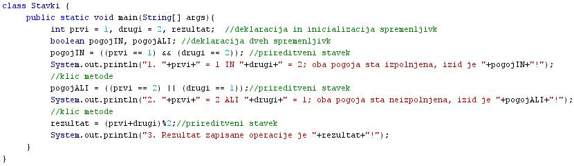
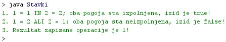

UKAZI ALI STAVKI
- Stavki ali ukazi v programskem jeziku so nekaj podobnega stavkom v slovenskem jeziku.
- Stavki v programskih jezikih predstavljajo zakljuèeno enoto, ki doloèa neko opravilo.
- V splošnem razlikujemo te vrste stavkov v programskih jezikih:
- Prireditveni stavki
- Klici metod (funkcij, subrutin ali programov)
- Stavki ustvarjanja objektov
- Krmilni stavki
- Deklaracije ali napovedi spremenljivk
- Do sedaj smo že spoznali prireditvene stavke, klice metod in deklaracije spremenljivk.
- Stavki v programskem jeziku Java so zakljuèeni s podpièjem - ";".
-
VAJA 17:
- V okolju za pisanje izvorne kode v jeziku Java, za prevajanje in za interaktivno delo zapiši zgornji program "Stavki". Pomagaj si s sliko.
- Kodo lahko tudi kopiraš iz te datoteke in jo prilepiš v okolje, v katerem pišeš programèke. Pozor: koda, ki jo boš kopiral/a, vsebuje eno, dve, tri ali štiri napake. Èe želiš, da bo program deloval, moraš napake odkriti in jih odpraviti.
- Izvorno kodo shrani pod imenom "ImePriimek17.java". ImePriimek je seveda tvoje lastno ime in priimek.
- Datoteko "ImePriimek17.java" prevedi.
- Prevedeno datoteko zaženi, preveri rezultat v interaktivnem oknu in poklièi profesorja, da vidi rezultat.
1. Vprašanja:
1. Kaj so stavki v programskih jezikih ali kaj predstavljajo?
2. Naštej vrste stavkov v programskih jezikih.
3. Naštej vrste stavkov, ki smo jih spoznali v dosedanjih primerih, in zapiši njihove naloge.
4. V primeru te uène enote poišèi vse deklaracije spremenljivk in jih prepiši v zvezek.
5. V primeru te uène enote poišèi vse prireditvene stavke in jih prepiši v zvezek.
6. V primeru te uène enote poišèi vse razliène klice metode in jih prepiši v zvezek.
7. Kateri pogojni operator smo uporabili v stavku številka 1?
8. Zakaj je vrednost logiène spremenljivke "logièniIN" v primeru te uène enote enaka 1?
9. Kateri pogojni operator smo uporabili v stavku številka 2?
10. Zakaj je vrednost logiène spremenljivke "logièniIN" v primeru te uène enote enaka 2?
2. Zapiši od ene do pet kljuènih besed, ki povzemajo vsebino te uène enote.
3. Povezave do dodatnih informacij.
Spletni priroènik proizvajalca programskega okolja Java. To je podjetje Sun.
|